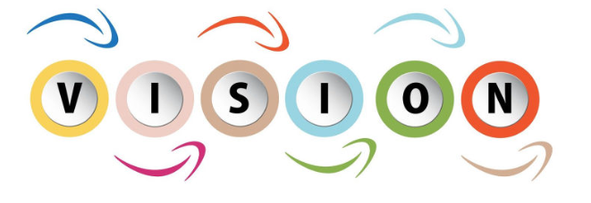
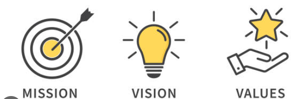

Vision
- To create leaders who will be at the forefront of innovation, creating and applying pivotal technologies that will transform the world of tomorrow, and seek solutions to problems of our businesses and our society.


Mission
- To deliver world-class education to students so that they excel in deep technical know-how including in new technologies, creativity, social awareness, entrepreneurial skills, and lifelong learning.
- To conduct curiosity-driven and problem-led research that generates transformative ideas that will improve our society and our world.
- To promote a transparent culture which prizes practical learning, innovation, problem-solving, teamwork, adaptation to change, and entrepreneurship.
- To engage and develop educators who are responsible to educate the next generation and to ensure that we always meet our exacting standards for education, research, and culture.